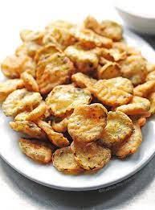

Fried Pickles

Deep fried, sliced and battered pickles
This isn't just any fried pickle recipe; this was one has a mighty kick to them! Perfectly seasoned with old bay and cajun seasoning, these pickles are sure to come out the way you want.
Ingredients
- 1/2 cup buttermilk
- salt and black pepper to taste
- 1 (16 ounce) jar dill pickle slices
- 1/2 cup all-purpose flour
- 1 1/2 cups fine cornmeal
- 1 tsp Old Bay
- 3/4 tsp Cajun Spice
- 1 Quart of Oil
Recipe Instructions
- Cover a plate with parchment paper or wax paper. In a shallow dish, combine buttermilk, salt, and pepper. Place pickles in mixture and set aside.
- Pour the flour, cornmeal, seafood seasoning, and 1/4 teaspoon Cajun seasoning into a large, resealable plastic bag; shake to mix well. Add pickles a few at a time and tumble gently to coat evenly with the flour mixture. Remove and place on prepared plate.
- Heat oil to 365 degrees F (180 degrees C) in deep-fryer or heavy deep skillet.
- Fry pickles in several batches until golden brown and slightly crisp on the outside with a moist interior, 1 to 2 minutes. Drain on paper towels.